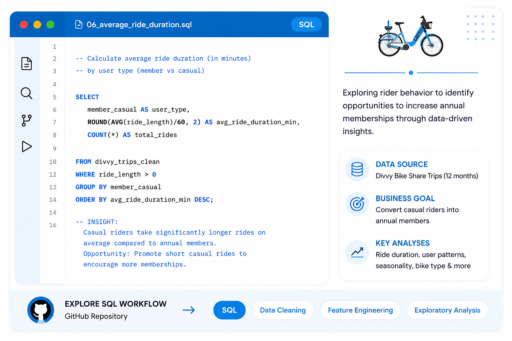
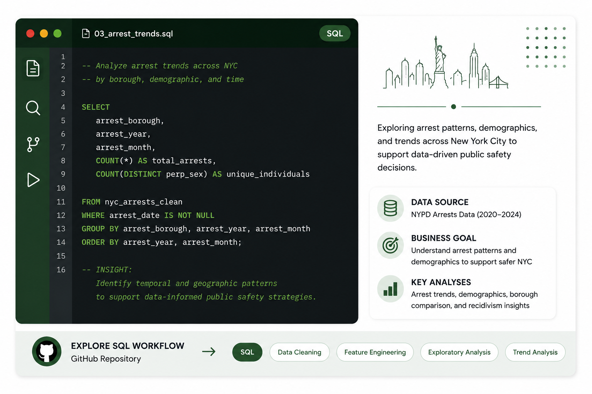
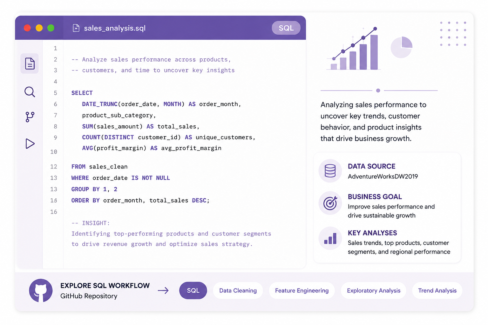
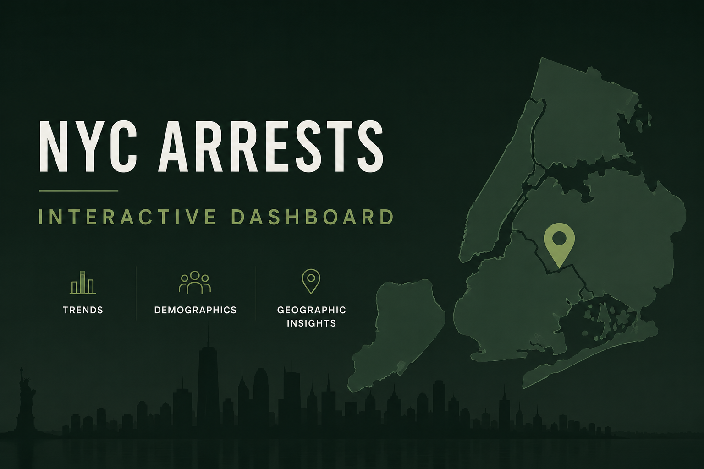

Built a complete SQL workflow using BigQuery to clean, transform, and analyze 12 months of Divvy Bike Share data.

Explore the SQL workflow used for data cleaning, feature engineering, and rider behavior analysis.
End-to-end analytics project combining SQL, visualization, and business storytelling to support marketing strategy.
.png)
Explore the complete analysis, key insights, and strategic recommendations designed to convert casual riders into annual members.
Built a SQL workflow to clean, transform, and explore NYC arrest data, uncovering demographic, geographic, and temporal patterns.

Explore the SQL workflow behind data cleaning, feature engineering, and exploratory analysis used to prepare the dataset for visualization.
End-to-end analytics project combining SQL, visualization, and data storytelling to explore arrest patterns across New York City.

Explore the complete analysis featuring demographic trends, geographic insights, and strategic recommendations to support data-informed public safety initiatives.
Built SQL queries to explore sales trends, customer segments, and product performance using the AdventureWorksDW2019 dataset.

Explore the complete SQL workflow, including data extraction, aggregation, segmentation, and analytical queries.
Business presentation showcasing visualizations, key insights, and strategic recommendations derived from SQL analysis.

Explore the complete business case study featuring dashboards, executive insights, and actionable recommendations.
Utilized Oracle SQL to extract, clean, and transform patient nutrition data before developing Tableau visualizations that enabled clinical stakeholders to monitor trends, identify outliers, and support evidence-based decision-making.

Discover how patient nutrition data was transformed into actionable insights through trend analysis, KPI tracking, and executive-level visual storytelling designed to support informed healthcare decisions.
Developed an interactive analytics dashboard for fatal police encounters, revealing trends, jurisdiction patterns, and public safety implications.

Explore the complete interactive Tableau dashboard and analytical findings developed through data visualization and storytelling.
Developed an interactive Tableau dashboard exploring music industry performance, award trends, release patterns, and creative collaborations through data visualization.
Explore an interactive dashboard featuring release patterns, award recognition, director collaborations, and demographic insights that reveal key milestones throughout an artist's career.

Use interactive filters to navigate borough-level trends, demographic patterns, hotspot maps, and monthly arrest activity across New York City.